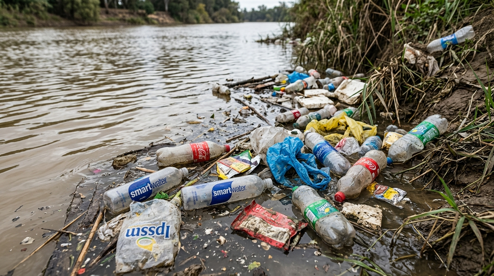
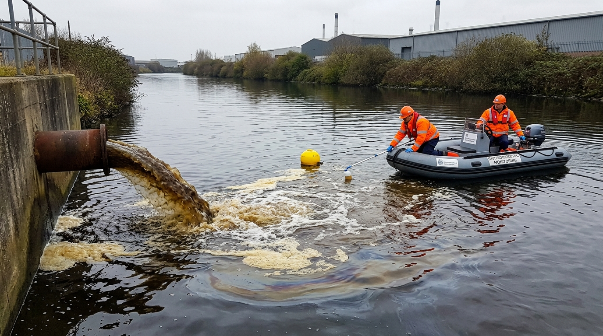
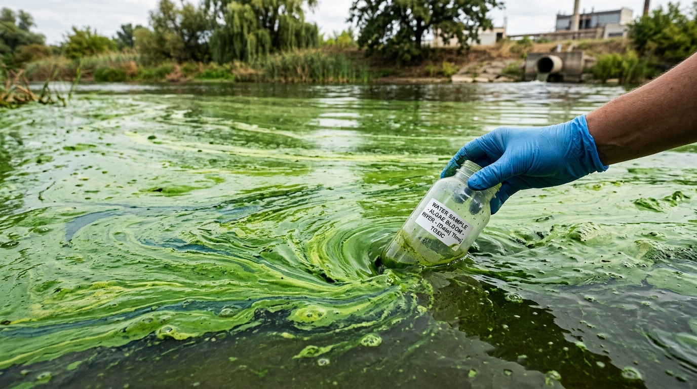

Water Safety Command Dashboard
LIVE SENSORS
Water Level
204.85
m
Water Temp
27.4
°C
pH Level
8.4
pH
Turbidity
52
NTU
24-Hour Telemetry Trends
Real-time sensor telemetry sampled at 3-hour intervals
Recent Alerts
Click any station to select and inspect its stream parameters.
Upload River Imagery for AI Inspection
Drag and drop water surface photo or browse files (JPG, PNG)
Or Select a River Sample Preset:

Plastic Debris

Chemical Effluent

Algae Bloom
Pristine Flow
DEMO AI ENGINE: Current visual detections use simulated computer vision heuristics and sample models for preview. Live edge-deployed neural network models will link via REST API in production.
Ready for analysis
Identified Anomaly
Solid Waste & Plastic Debris
Neural Confidence Score
94.6%
Recommended Mitigation Action:
Click any station pin on the map or select from the list below to inspect telemetry.
Monitoring Stations
Showing historical logs
CPCB & WHO Environmental Compliance Standards
| Timestamp | Station | River | WQI | pH | Turbidity | Dissolved O₂ | Compliance Status |
|---|
AA
Anandhan Akkira
River Basin Surveillance Officer
ID: IN-CPCB-2026-884
Department:
Central Water Quality Directorate
Central Water Quality Directorate
Assigned Region:
National Capital & Northern Basin
National Capital & Northern Basin
Access Clearance:
Level 3 (Command)
Level 3 (Command)
Safety Alert Threshold Limits
Interface Appearance
Emergency Response Contacts
CPCB Emergency Hotline
1800-11-7788
Disaster Response (NDRF)
1078
River Basin Technical Desk
ops@jaldrishti.gov.in